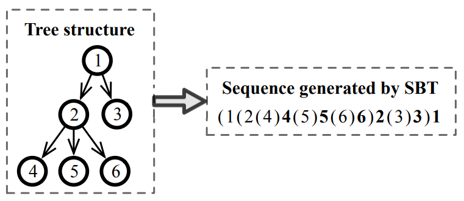
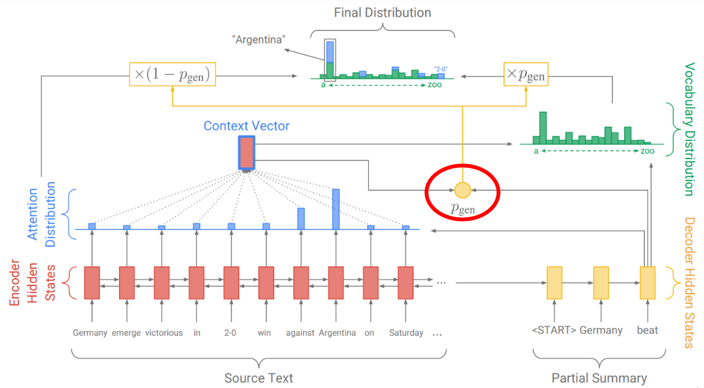
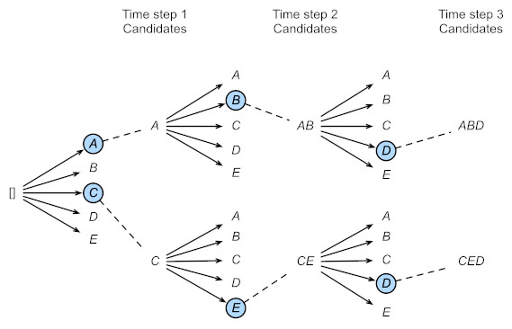
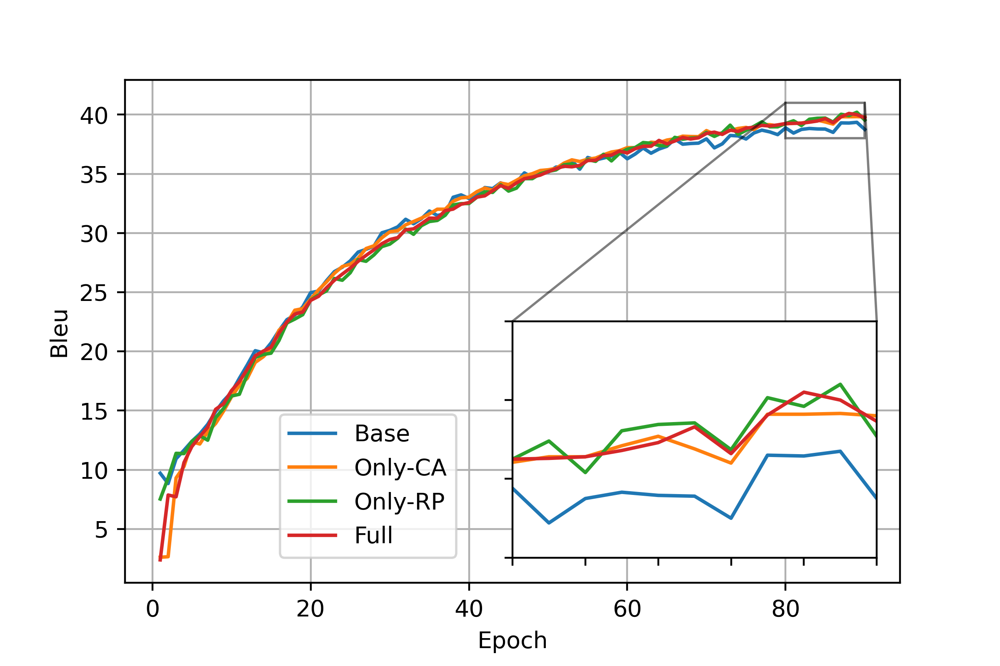
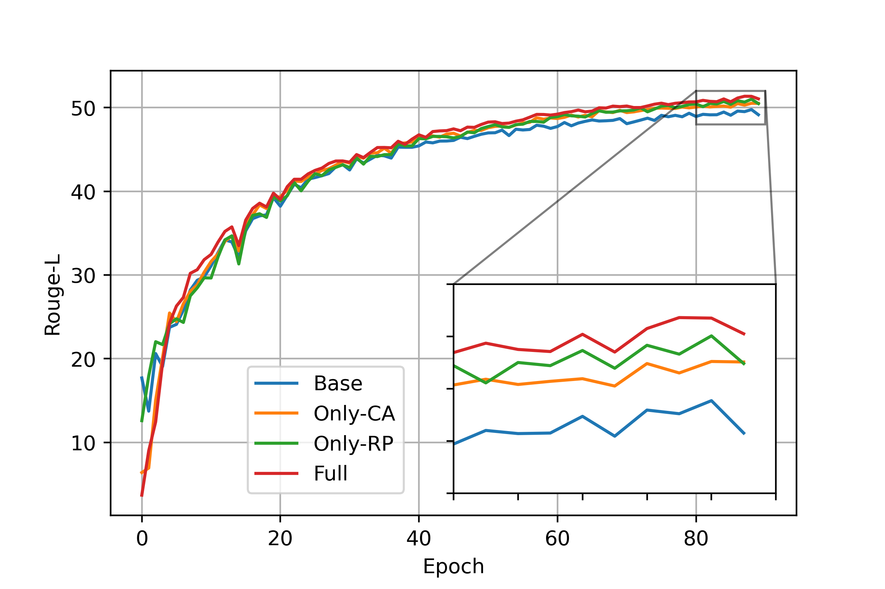
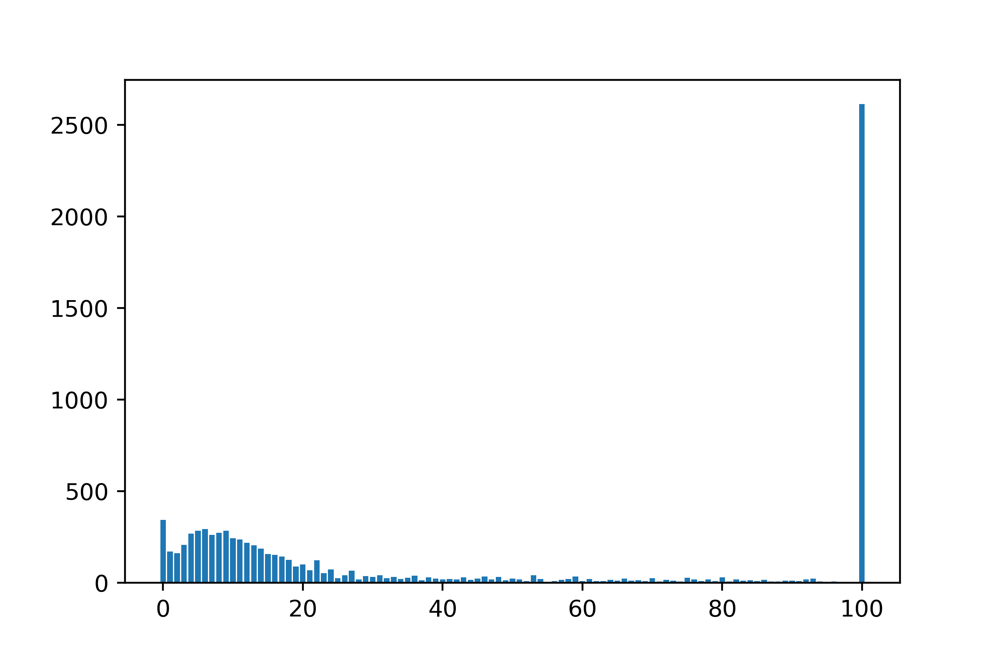

基于 Transformer 的 Source Code Summarization
thebesttv
1. 任务
- Automatic Source Code Summarization (ASCS)
- 将代码转换成自然语言
函数
public static String selectText(XPathExpression expr, Node context) { try { return (String)expr.evaluate(context, XPathConstants.STRING ); } catch (XPathExpressionException e) { throw new XmlException(e); } }→ 一句话注释
evaluates the xpath expression as a text string .
1.1. 一些问题
- long-range dependency
RNN- Transformer ✓
- 代码 ≠ 文本
- 代码非线性, 如何表示
- 特殊符号
().:… - 变量名包含多个单词
memoryIsLow?memory,Is,Low?
2. 原理
关注: Different design choices
- 代码表示
- Transformer
- Positional Encoding
- Copy Attention
- 输出
2.1. 代码表示
如何表示结构化的代码?
抽象语法树 X
Structure-based Traversal

线性 ✓
把代码当作文本
2.2. Transformer

2.2.1. Positional Encoding
- 注释: 绝对位置编码
- 绝对位置编码学习得到
- 代码: 相对位置编码
- 每个输入向量的位置编码只与其左右 \(k\) 个向量有关
- 计算第一层 attention 时, 添加 \(v'_{ij}\) 和 \(k'_{ij}\) 两个向量 \[ \color{gray}{o_i = \sum_{j=1}^n \alpha_{ij} (v_j + \color{red}{v'_{ij}} ), \qquad e_{ij} = q_i (k_j + \color{red}{k'_{ij}})^T} \]
- \(v'_{ij}\) 和 \(k'_{ij}\) 只与 \(i, j\) 之间距离有关 \(v'_{ij} = w_{dist(i, j)}\)
- 距离的方向
a + b\(\iff\)b + a- 是否要考虑
a和b的左右方向?- 即距离有无绝对值?
- \(dist(i,j) = | i - j |\)
- \(dist(i,j) = i - j\)
x = v[i] if i < len(v) else 0- 考虑方向
- 最大距离 \(k\) (clipping)
- \(|dist(i, j)| \le k\)
2.2.2. Copy Attention / Copy Mechanism
- 有时输入存在没见过的词
- 学习一个概率 \(p_{gen}\), 决定是否要复制该词作为输出

2.2.3. 输出
Greedy Search X
并行取最值
Beam Serach ✓
依次选择前 \(n\) 大

3. 实验
- 四个模型
- 是否使用 Relative position (相对位置编码)
- 是否使用 Copy attention
| 模型名 | RP | CA |
|---|---|---|
| Base | X | X |
| Only-CA | X | ✓ |
| Only-RP | ✓ | X |
| Full | ✓ | ✓ |
- 环境
- Ubuntu 18.04 LTS
- 3090单卡
- CUDA 11.4
- Python 3.8.12
- Torch 1.10.2
3.1. 数据集
从GitHub repo中爬取Java代码
- 每个repo至少20个star
3.1.1. 预处理
- 取函数注释的第一句话作为summary
- 去除低质量代码
- 没有注释或注释只有几个字的
- getter / setter / constructor 等注释过于简单的函数
- 注释转token
- 大写转小写
- 保留特殊字符 (
<>{}()?.;…) - 添加
<unk>,<s>(BOS),</s>(EOS)
- 代码转token: 减小词汇量
- 保留特殊字符
- 变量名分割
memoryIsLow→memory,Is,Lowm_BatchBuffer→m,Batch,Buffersha256_HMAC→sha,256,HMAC
- 数字 →
_NUM(负号保留)-1024→-,_NUM
- 字符串 →
STRING - 添加
<unk>
源码
/**
* Is the str a simple match pattern.
*/
public static boolean isSimpleMatchPattern(String str) {
return str.indexOf('*') != -1;
}
注释
is the str a simple match pattern .
预处理后代码
public static boolean
is Simple Match Pattern ( String str )
{ return str . index Of ( STRING ) != - NUM ; }
3.1.2. 大小
共87,136个样本, 按8:1:1分割
| 训练 | 69,708 |
| 测试 | 8,714 |
| 验证 | 8,714 |
| 函数Token (无变量名分割) | 292,626 |
| 函数Token (变量名分割) | 66,650 |
| 注释Token | 46,895 |
3.1.3. 格式
├── dev (验证)
│ ├── code.original (代码)
│ ├── code.original_subtoken (变量名分割后代码)
│ └── javadoc.original (注释)
├── test (测试)
│ ├── code.original
│ ├── code.original_subtoken
│ └── javadoc.original
└── train (训练)
├── code.original
├── code.original_subtoken
└── javadoc.original
train/code.original_subtoken
@ Override public int run Command ( boolean merge Error Into Output , String ... commands ) throws IO Exception , Interrupted Exception { return run Command ( merge Error Into Output , new Array List < String > ( Arrays . as List ( commands ) ) ) ; }
private int find PLV ( int M Price List ID ) { Timestamp price Date = null ; String date Str = Env . get Context ( Env . get Ctx ( ) , p Window No , STRING ) ; if ( date Str != null && date Str . length ( ) > NUM ) price Date = Env . get Context As Date ( Env . get Ctx ( ) , p Window No , STRING ) ; else { date Str = Env . get Context ( Env . get Ctx ( ) , p Window No , STRING ) ; if ( date Str != null && date Str . length ( ) > NUM ) price Date = Env . get Context As Date ( Env . get Ctx ( ) , p Window No , STRING ) ; } if ( price Date == null ) price Date = new Timestamp ( System . current Time Millis ( ) ) ; log . config ( STRING + M Price List ID + STRING + price Date ) ; int ret Value = NUM ; String sql = STRING + STRING + STRING + STRING + STRING + STRING ; try { Prepared Statement pstmt = DB . prepare Statement ( sql , null ) ; pstmt . set Int ( NUM , M Price List ID ) ; Result Set rs = pstmt . execute Query ( ) ; while ( rs . next ( ) && ret Value == NUM ) { Timestamp pl Date = rs . get Timestamp ( NUM ) ; if ( ! price Date . before ( pl Date ) ) ret Value = rs . get Int ( NUM ) ; } rs . close ( ) ; pstmt . close ( ) ; } catch ( SQL Exception e ) { log . log ( Level . SEVERE , sql , e ) ; } Env . set Context ( Env . get Ctx ( ) , p Window No , STRING , ret Value ) ; return ret Value ; }
public static boolean memory Is Low ( ) { return available Memory ( ) * NUM < RUNTIME . total Memory ( ) * NUM ; }
public String describe Attributes ( ) { String Builder sb = new String Builder ( ) ; sb . append ( STRING ) ; boolean first = BOOL ; for ( Object key : attributes . key Set ( ) ) { if ( first ) { first = BOOL ; } else { sb . append ( STRING ) ; } sb . append ( key ) ; sb . append ( STRING ) ; sb . append ( attributes . get ( key ) ) ; } sb . append ( STRING ) ; return sb . to String ( ) ; }
public static byte [ ] next Bytes ( byte [ ] buffer ) { s Random . next Bytes ( buffer ) ; return buffer ; }
train/javadoc.original
runs a command on the command line synchronously .
find price list version and update context
returns true if less then 5 % of the available memory is free .
returns a string representation of the object ' s current attributes
fill the given buffer with random bytes .
3.2. 评价指标
3.2.1. BLEU
相似: N-gram overlap (准确率)
原始翻译=“a b c”, 预测结果=“a a b c”
- (a, b, c) ∩ (a, a, b, c) → \(p_1 = 3/4\)
- (ab, bc) ∩ (aa, ab, bc) → \(p_2 = 2/3\)
- (abc) ∩ (aab, abc) → \(p_3 = 1/2\)
- 几何平均 \(\sqrt[3]{p_1 \, p_2 \, p_3}\)
- 平滑: \(p_i\) 分子分母加一, 防止 \(p_i = 0\)
- Brevity Penalty: 预测结果不能太短
- 不考虑召回率
3.2.2. ROUGE-L
- 相似: 最长公共子序列(LCS)大小
- the hello a cat dog fox jumps
- the fox jumps
3.3. 参数
- batch size: 训练 64, 测试 128
- Full: 200个epoch, 其他: 90个eopch
- 6层Transformer, 8头attention, beam size: 4
- \(d_{model} = 512\) (输入输出为一串向量, 每个向量 \(x_i \in R^{d_{model}}\))
- \(d_{ff} = 2048\) (FFNN)
- \(d_k = d_v = 64\) (\(W^Q, W^K \in R^{d_{model}\times d_k}\), \(W^V \in R^{d_{model}\times d_v}\))
- \(k = 16\) (相对位置编码的clipping distance)
- Adam优化器, 学习率 \(lr = 10^{-4}\), \(decay = 0.99\)
- 每个epoch: \(lr \leftarrow lr \times decay\)
- Dropout: 0.2, 无weight decay
- Early Stop: 20个epoch
- 代码最大长度: 150
- 注释最大长度: 50
- 单个token最大长度: 30
3.3.1. Base
- encoder-decoder: 44.1M
- total: 76.1M
+------------------------------------------------------------------------------+--------------+----------+
| Layer Name | Output Shape | Param # |
+------------------------------------------------------------------------------+--------------+----------+
| embedder.src_word_embeddings.make_embedding.emb_luts.0.weight | [34131, 512] | 17475072 |
| embedder.tgt_word_embeddings.make_embedding.emb_luts.0.weight | [28239, 512] | 14458368 |
| embedder.tgt_pos_embeddings.weight | [52, 512] | 26624 |
| encoder.transformer.layer.0.attention.key.weight | [512, 512] | 262144 |
| encoder.transformer.layer.0.attention.key.bias | [512] | 512 |
| encoder.transformer.layer.0.attention.query.weight | [512, 512] | 262144 |
| encoder.transformer.layer.0.attention.query.bias | [512] | 512 |
| encoder.transformer.layer.0.attention.value.weight | [512, 512] | 262144 |
| encoder.transformer.layer.0.attention.value.bias | [512] | 512 |
| encoder.transformer.layer.0.attention.output.weight | [512, 512] | 262144 |
| encoder.transformer.layer.0.attention.output.bias | [512] | 512 |
| encoder.transformer.layer.0.layer_norm.weight | [512] | 512 |
| encoder.transformer.layer.0.layer_norm.bias | [512] | 512 |
| encoder.transformer.layer.0.feed_forward.intermediate.weight | [2048, 512] | 1048576 |
| encoder.transformer.layer.0.feed_forward.intermediate.bias | [2048] | 2048 |
| encoder.transformer.layer.0.feed_forward.output.weight | [512, 2048] | 1048576 |
| encoder.transformer.layer.0.feed_forward.output.bias | [512] | 512 |
| encoder.transformer.layer.0.feed_forward.layer_norm.weight | [512] | 512 |
| encoder.transformer.layer.0.feed_forward.layer_norm.bias | [512] | 512 |
| encoder.transformer.layer.1.attention.key.weight | [512, 512] | 262144 |
| encoder.transformer.layer.1.attention.key.bias | [512] | 512 |
| encoder.transformer.layer.1.attention.query.weight | [512, 512] | 262144 |
| encoder.transformer.layer.1.attention.query.bias | [512] | 512 |
| encoder.transformer.layer.1.attention.value.weight | [512, 512] | 262144 |
| encoder.transformer.layer.1.attention.value.bias | [512] | 512 |
| encoder.transformer.layer.1.attention.output.weight | [512, 512] | 262144 |
| encoder.transformer.layer.1.attention.output.bias | [512] | 512 |
| encoder.transformer.layer.1.layer_norm.weight | [512] | 512 |
| encoder.transformer.layer.1.layer_norm.bias | [512] | 512 |
| encoder.transformer.layer.1.feed_forward.intermediate.weight | [2048, 512] | 1048576 |
| encoder.transformer.layer.1.feed_forward.intermediate.bias | [2048] | 2048 |
| encoder.transformer.layer.1.feed_forward.output.weight | [512, 2048] | 1048576 |
| encoder.transformer.layer.1.feed_forward.output.bias | [512] | 512 |
| encoder.transformer.layer.1.feed_forward.layer_norm.weight | [512] | 512 |
| encoder.transformer.layer.1.feed_forward.layer_norm.bias | [512] | 512 |
| encoder.transformer.layer.2.attention.key.weight | [512, 512] | 262144 |
| encoder.transformer.layer.2.attention.key.bias | [512] | 512 |
| encoder.transformer.layer.2.attention.query.weight | [512, 512] | 262144 |
| encoder.transformer.layer.2.attention.query.bias | [512] | 512 |
| encoder.transformer.layer.2.attention.value.weight | [512, 512] | 262144 |
| encoder.transformer.layer.2.attention.value.bias | [512] | 512 |
| encoder.transformer.layer.2.attention.output.weight | [512, 512] | 262144 |
| encoder.transformer.layer.2.attention.output.bias | [512] | 512 |
| encoder.transformer.layer.2.layer_norm.weight | [512] | 512 |
| encoder.transformer.layer.2.layer_norm.bias | [512] | 512 |
| encoder.transformer.layer.2.feed_forward.intermediate.weight | [2048, 512] | 1048576 |
| encoder.transformer.layer.2.feed_forward.intermediate.bias | [2048] | 2048 |
| encoder.transformer.layer.2.feed_forward.output.weight | [512, 2048] | 1048576 |
| encoder.transformer.layer.2.feed_forward.output.bias | [512] | 512 |
| encoder.transformer.layer.2.feed_forward.layer_norm.weight | [512] | 512 |
| encoder.transformer.layer.2.feed_forward.layer_norm.bias | [512] | 512 |
| encoder.transformer.layer.3.attention.key.weight | [512, 512] | 262144 |
| encoder.transformer.layer.3.attention.key.bias | [512] | 512 |
| encoder.transformer.layer.3.attention.query.weight | [512, 512] | 262144 |
| encoder.transformer.layer.3.attention.query.bias | [512] | 512 |
| encoder.transformer.layer.3.attention.value.weight | [512, 512] | 262144 |
| encoder.transformer.layer.3.attention.value.bias | [512] | 512 |
| encoder.transformer.layer.3.attention.output.weight | [512, 512] | 262144 |
| encoder.transformer.layer.3.attention.output.bias | [512] | 512 |
| encoder.transformer.layer.3.layer_norm.weight | [512] | 512 |
| encoder.transformer.layer.3.layer_norm.bias | [512] | 512 |
| encoder.transformer.layer.3.feed_forward.intermediate.weight | [2048, 512] | 1048576 |
| encoder.transformer.layer.3.feed_forward.intermediate.bias | [2048] | 2048 |
| encoder.transformer.layer.3.feed_forward.output.weight | [512, 2048] | 1048576 |
| encoder.transformer.layer.3.feed_forward.output.bias | [512] | 512 |
| encoder.transformer.layer.3.feed_forward.layer_norm.weight | [512] | 512 |
| encoder.transformer.layer.3.feed_forward.layer_norm.bias | [512] | 512 |
| encoder.transformer.layer.4.attention.key.weight | [512, 512] | 262144 |
| encoder.transformer.layer.4.attention.key.bias | [512] | 512 |
| encoder.transformer.layer.4.attention.query.weight | [512, 512] | 262144 |
| encoder.transformer.layer.4.attention.query.bias | [512] | 512 |
| encoder.transformer.layer.4.attention.value.weight | [512, 512] | 262144 |
| encoder.transformer.layer.4.attention.value.bias | [512] | 512 |
| encoder.transformer.layer.4.attention.output.weight | [512, 512] | 262144 |
| encoder.transformer.layer.4.attention.output.bias | [512] | 512 |
| encoder.transformer.layer.4.layer_norm.weight | [512] | 512 |
| encoder.transformer.layer.4.layer_norm.bias | [512] | 512 |
| encoder.transformer.layer.4.feed_forward.intermediate.weight | [2048, 512] | 1048576 |
| encoder.transformer.layer.4.feed_forward.intermediate.bias | [2048] | 2048 |
| encoder.transformer.layer.4.feed_forward.output.weight | [512, 2048] | 1048576 |
| encoder.transformer.layer.4.feed_forward.output.bias | [512] | 512 |
| encoder.transformer.layer.4.feed_forward.layer_norm.weight | [512] | 512 |
| encoder.transformer.layer.4.feed_forward.layer_norm.bias | [512] | 512 |
| encoder.transformer.layer.5.attention.key.weight | [512, 512] | 262144 |
| encoder.transformer.layer.5.attention.key.bias | [512] | 512 |
| encoder.transformer.layer.5.attention.query.weight | [512, 512] | 262144 |
| encoder.transformer.layer.5.attention.query.bias | [512] | 512 |
| encoder.transformer.layer.5.attention.value.weight | [512, 512] | 262144 |
| encoder.transformer.layer.5.attention.value.bias | [512] | 512 |
| encoder.transformer.layer.5.attention.output.weight | [512, 512] | 262144 |
| encoder.transformer.layer.5.attention.output.bias | [512] | 512 |
| encoder.transformer.layer.5.layer_norm.weight | [512] | 512 |
| encoder.transformer.layer.5.layer_norm.bias | [512] | 512 |
| encoder.transformer.layer.5.feed_forward.intermediate.weight | [2048, 512] | 1048576 |
| encoder.transformer.layer.5.feed_forward.intermediate.bias | [2048] | 2048 |
| encoder.transformer.layer.5.feed_forward.output.weight | [512, 2048] | 1048576 |
| encoder.transformer.layer.5.feed_forward.output.bias | [512] | 512 |
| encoder.transformer.layer.5.feed_forward.layer_norm.weight | [512] | 512 |
| encoder.transformer.layer.5.feed_forward.layer_norm.bias | [512] | 512 |
| decoder.transformer.layer.0.attention.key.weight | [512, 512] | 262144 |
| decoder.transformer.layer.0.attention.key.bias | [512] | 512 |
| decoder.transformer.layer.0.attention.query.weight | [512, 512] | 262144 |
| decoder.transformer.layer.0.attention.query.bias | [512] | 512 |
| decoder.transformer.layer.0.attention.value.weight | [512, 512] | 262144 |
| decoder.transformer.layer.0.attention.value.bias | [512] | 512 |
| decoder.transformer.layer.0.attention.output.weight | [512, 512] | 262144 |
| decoder.transformer.layer.0.attention.output.bias | [512] | 512 |
| decoder.transformer.layer.0.layer_norm.weight | [512] | 512 |
| decoder.transformer.layer.0.layer_norm.bias | [512] | 512 |
| decoder.transformer.layer.0.context_attn.key.weight | [512, 512] | 262144 |
| decoder.transformer.layer.0.context_attn.key.bias | [512] | 512 |
| decoder.transformer.layer.0.context_attn.query.weight | [512, 512] | 262144 |
| decoder.transformer.layer.0.context_attn.query.bias | [512] | 512 |
| decoder.transformer.layer.0.context_attn.value.weight | [512, 512] | 262144 |
| decoder.transformer.layer.0.context_attn.value.bias | [512] | 512 |
| decoder.transformer.layer.0.context_attn.output.weight | [512, 512] | 262144 |
| decoder.transformer.layer.0.context_attn.output.bias | [512] | 512 |
| decoder.transformer.layer.0.layer_norm_2.weight | [512] | 512 |
| decoder.transformer.layer.0.layer_norm_2.bias | [512] | 512 |
| decoder.transformer.layer.0.feed_forward.intermediate.weight | [2048, 512] | 1048576 |
| decoder.transformer.layer.0.feed_forward.intermediate.bias | [2048] | 2048 |
| decoder.transformer.layer.0.feed_forward.output.weight | [512, 2048] | 1048576 |
| decoder.transformer.layer.0.feed_forward.output.bias | [512] | 512 |
| decoder.transformer.layer.0.feed_forward.layer_norm.weight | [512] | 512 |
| decoder.transformer.layer.0.feed_forward.layer_norm.bias | [512] | 512 |
| decoder.transformer.layer.1.attention.key.weight | [512, 512] | 262144 |
| decoder.transformer.layer.1.attention.key.bias | [512] | 512 |
| decoder.transformer.layer.1.attention.query.weight | [512, 512] | 262144 |
| decoder.transformer.layer.1.attention.query.bias | [512] | 512 |
| decoder.transformer.layer.1.attention.value.weight | [512, 512] | 262144 |
| decoder.transformer.layer.1.attention.value.bias | [512] | 512 |
| decoder.transformer.layer.1.attention.output.weight | [512, 512] | 262144 |
| decoder.transformer.layer.1.attention.output.bias | [512] | 512 |
| decoder.transformer.layer.1.layer_norm.weight | [512] | 512 |
| decoder.transformer.layer.1.layer_norm.bias | [512] | 512 |
| decoder.transformer.layer.1.context_attn.key.weight | [512, 512] | 262144 |
| decoder.transformer.layer.1.context_attn.key.bias | [512] | 512 |
| decoder.transformer.layer.1.context_attn.query.weight | [512, 512] | 262144 |
| decoder.transformer.layer.1.context_attn.query.bias | [512] | 512 |
| decoder.transformer.layer.1.context_attn.value.weight | [512, 512] | 262144 |
| decoder.transformer.layer.1.context_attn.value.bias | [512] | 512 |
| decoder.transformer.layer.1.context_attn.output.weight | [512, 512] | 262144 |
| decoder.transformer.layer.1.context_attn.output.bias | [512] | 512 |
| decoder.transformer.layer.1.layer_norm_2.weight | [512] | 512 |
| decoder.transformer.layer.1.layer_norm_2.bias | [512] | 512 |
| decoder.transformer.layer.1.feed_forward.intermediate.weight | [2048, 512] | 1048576 |
| decoder.transformer.layer.1.feed_forward.intermediate.bias | [2048] | 2048 |
| decoder.transformer.layer.1.feed_forward.output.weight | [512, 2048] | 1048576 |
| decoder.transformer.layer.1.feed_forward.output.bias | [512] | 512 |
| decoder.transformer.layer.1.feed_forward.layer_norm.weight | [512] | 512 |
| decoder.transformer.layer.1.feed_forward.layer_norm.bias | [512] | 512 |
| decoder.transformer.layer.2.attention.key.weight | [512, 512] | 262144 |
| decoder.transformer.layer.2.attention.key.bias | [512] | 512 |
| decoder.transformer.layer.2.attention.query.weight | [512, 512] | 262144 |
| decoder.transformer.layer.2.attention.query.bias | [512] | 512 |
| decoder.transformer.layer.2.attention.value.weight | [512, 512] | 262144 |
| decoder.transformer.layer.2.attention.value.bias | [512] | 512 |
| decoder.transformer.layer.2.attention.output.weight | [512, 512] | 262144 |
| decoder.transformer.layer.2.attention.output.bias | [512] | 512 |
| decoder.transformer.layer.2.layer_norm.weight | [512] | 512 |
| decoder.transformer.layer.2.layer_norm.bias | [512] | 512 |
| decoder.transformer.layer.2.context_attn.key.weight | [512, 512] | 262144 |
| decoder.transformer.layer.2.context_attn.key.bias | [512] | 512 |
| decoder.transformer.layer.2.context_attn.query.weight | [512, 512] | 262144 |
| decoder.transformer.layer.2.context_attn.query.bias | [512] | 512 |
| decoder.transformer.layer.2.context_attn.value.weight | [512, 512] | 262144 |
| decoder.transformer.layer.2.context_attn.value.bias | [512] | 512 |
| decoder.transformer.layer.2.context_attn.output.weight | [512, 512] | 262144 |
| decoder.transformer.layer.2.context_attn.output.bias | [512] | 512 |
| decoder.transformer.layer.2.layer_norm_2.weight | [512] | 512 |
| decoder.transformer.layer.2.layer_norm_2.bias | [512] | 512 |
| decoder.transformer.layer.2.feed_forward.intermediate.weight | [2048, 512] | 1048576 |
| decoder.transformer.layer.2.feed_forward.intermediate.bias | [2048] | 2048 |
| decoder.transformer.layer.2.feed_forward.output.weight | [512, 2048] | 1048576 |
| decoder.transformer.layer.2.feed_forward.output.bias | [512] | 512 |
| decoder.transformer.layer.2.feed_forward.layer_norm.weight | [512] | 512 |
| decoder.transformer.layer.2.feed_forward.layer_norm.bias | [512] | 512 |
| decoder.transformer.layer.3.attention.key.weight | [512, 512] | 262144 |
| decoder.transformer.layer.3.attention.key.bias | [512] | 512 |
| decoder.transformer.layer.3.attention.query.weight | [512, 512] | 262144 |
| decoder.transformer.layer.3.attention.query.bias | [512] | 512 |
| decoder.transformer.layer.3.attention.value.weight | [512, 512] | 262144 |
| decoder.transformer.layer.3.attention.value.bias | [512] | 512 |
| decoder.transformer.layer.3.attention.output.weight | [512, 512] | 262144 |
| decoder.transformer.layer.3.attention.output.bias | [512] | 512 |
| decoder.transformer.layer.3.layer_norm.weight | [512] | 512 |
| decoder.transformer.layer.3.layer_norm.bias | [512] | 512 |
| decoder.transformer.layer.3.context_attn.key.weight | [512, 512] | 262144 |
| decoder.transformer.layer.3.context_attn.key.bias | [512] | 512 |
| decoder.transformer.layer.3.context_attn.query.weight | [512, 512] | 262144 |
| decoder.transformer.layer.3.context_attn.query.bias | [512] | 512 |
| decoder.transformer.layer.3.context_attn.value.weight | [512, 512] | 262144 |
| decoder.transformer.layer.3.context_attn.value.bias | [512] | 512 |
| decoder.transformer.layer.3.context_attn.output.weight | [512, 512] | 262144 |
| decoder.transformer.layer.3.context_attn.output.bias | [512] | 512 |
| decoder.transformer.layer.3.layer_norm_2.weight | [512] | 512 |
| decoder.transformer.layer.3.layer_norm_2.bias | [512] | 512 |
| decoder.transformer.layer.3.feed_forward.intermediate.weight | [2048, 512] | 1048576 |
| decoder.transformer.layer.3.feed_forward.intermediate.bias | [2048] | 2048 |
| decoder.transformer.layer.3.feed_forward.output.weight | [512, 2048] | 1048576 |
| decoder.transformer.layer.3.feed_forward.output.bias | [512] | 512 |
| decoder.transformer.layer.3.feed_forward.layer_norm.weight | [512] | 512 |
| decoder.transformer.layer.3.feed_forward.layer_norm.bias | [512] | 512 |
| decoder.transformer.layer.4.attention.key.weight | [512, 512] | 262144 |
| decoder.transformer.layer.4.attention.key.bias | [512] | 512 |
| decoder.transformer.layer.4.attention.query.weight | [512, 512] | 262144 |
| decoder.transformer.layer.4.attention.query.bias | [512] | 512 |
| decoder.transformer.layer.4.attention.value.weight | [512, 512] | 262144 |
| decoder.transformer.layer.4.attention.value.bias | [512] | 512 |
| decoder.transformer.layer.4.attention.output.weight | [512, 512] | 262144 |
| decoder.transformer.layer.4.attention.output.bias | [512] | 512 |
| decoder.transformer.layer.4.layer_norm.weight | [512] | 512 |
| decoder.transformer.layer.4.layer_norm.bias | [512] | 512 |
| decoder.transformer.layer.4.context_attn.key.weight | [512, 512] | 262144 |
| decoder.transformer.layer.4.context_attn.key.bias | [512] | 512 |
| decoder.transformer.layer.4.context_attn.query.weight | [512, 512] | 262144 |
| decoder.transformer.layer.4.context_attn.query.bias | [512] | 512 |
| decoder.transformer.layer.4.context_attn.value.weight | [512, 512] | 262144 |
| decoder.transformer.layer.4.context_attn.value.bias | [512] | 512 |
| decoder.transformer.layer.4.context_attn.output.weight | [512, 512] | 262144 |
| decoder.transformer.layer.4.context_attn.output.bias | [512] | 512 |
| decoder.transformer.layer.4.layer_norm_2.weight | [512] | 512 |
| decoder.transformer.layer.4.layer_norm_2.bias | [512] | 512 |
| decoder.transformer.layer.4.feed_forward.intermediate.weight | [2048, 512] | 1048576 |
| decoder.transformer.layer.4.feed_forward.intermediate.bias | [2048] | 2048 |
| decoder.transformer.layer.4.feed_forward.output.weight | [512, 2048] | 1048576 |
| decoder.transformer.layer.4.feed_forward.output.bias | [512] | 512 |
| decoder.transformer.layer.4.feed_forward.layer_norm.weight | [512] | 512 |
| decoder.transformer.layer.4.feed_forward.layer_norm.bias | [512] | 512 |
| decoder.transformer.layer.5.attention.key.weight | [512, 512] | 262144 |
| decoder.transformer.layer.5.attention.key.bias | [512] | 512 |
| decoder.transformer.layer.5.attention.query.weight | [512, 512] | 262144 |
| decoder.transformer.layer.5.attention.query.bias | [512] | 512 |
| decoder.transformer.layer.5.attention.value.weight | [512, 512] | 262144 |
| decoder.transformer.layer.5.attention.value.bias | [512] | 512 |
| decoder.transformer.layer.5.attention.output.weight | [512, 512] | 262144 |
| decoder.transformer.layer.5.attention.output.bias | [512] | 512 |
| decoder.transformer.layer.5.layer_norm.weight | [512] | 512 |
| decoder.transformer.layer.5.layer_norm.bias | [512] | 512 |
| decoder.transformer.layer.5.context_attn.key.weight | [512, 512] | 262144 |
| decoder.transformer.layer.5.context_attn.key.bias | [512] | 512 |
| decoder.transformer.layer.5.context_attn.query.weight | [512, 512] | 262144 |
| decoder.transformer.layer.5.context_attn.query.bias | [512] | 512 |
| decoder.transformer.layer.5.context_attn.value.weight | [512, 512] | 262144 |
| decoder.transformer.layer.5.context_attn.value.bias | [512] | 512 |
| decoder.transformer.layer.5.context_attn.output.weight | [512, 512] | 262144 |
| decoder.transformer.layer.5.context_attn.output.bias | [512] | 512 |
| decoder.transformer.layer.5.layer_norm_2.weight | [512] | 512 |
| decoder.transformer.layer.5.layer_norm_2.bias | [512] | 512 |
| decoder.transformer.layer.5.feed_forward.intermediate.weight | [2048, 512] | 1048576 |
| decoder.transformer.layer.5.feed_forward.intermediate.bias | [2048] | 2048 |
| decoder.transformer.layer.5.feed_forward.output.weight | [512, 2048] | 1048576 |
| decoder.transformer.layer.5.feed_forward.output.bias | [512] | 512 |
| decoder.transformer.layer.5.feed_forward.layer_norm.weight | [512] | 512 |
| decoder.transformer.layer.5.feed_forward.layer_norm.bias | [512] | 512 |
| generator.bias | [28239] | 28239 |
+------------------------------------------------------------------------------+--------------+----------+
3.3.2. Only-CA
- encoder-decoder: 44.1M
- total: 76.9M
| copy_attn.linear_in.weight | [512, 512] | 262144 |
| copy_attn.linear_out.weight | [512, 1024] | 524288 |
| copy_generator.linear_copy.weight | [1, 512] | 512 |
| copy_generator.linear_copy.bias | [1] | 1 |
3.3.3. Only-RP
- encoder-decoder: 44.2M
- total: 76.2M
- encoder (代码)使用 relative position
- decoder (注释)使用 absolute position
| encoder.L0.attention.rel_positions_embeddings_k.weight | [65, 64] | 4160 |
| encoder.L0.attention.rel_positions_embeddings_v.weight | [65, 64] | 4160 |
| encoder.L1.attention.rel_positions_embeddings_k.weight | [65, 64] | 4160 |
| encoder.L1.attention.rel_positions_embeddings_v.weight | [65, 64] | 4160 |
| encoder.L2.attention.rel_positions_embeddings_k.weight | [65, 64] | 4160 |
| encoder.L2.attention.rel_positions_embeddings_v.weight | [65, 64] | 4160 |
| encoder.L3.attention.rel_positions_embeddings_k.weight | [65, 64] | 4160 |
| encoder.L3.attention.rel_positions_embeddings_v.weight | [65, 64] | 4160 |
| encoder.L4.attention.rel_positions_embeddings_k.weight | [65, 64] | 4160 |
| encoder.L4.attention.rel_positions_embeddings_v.weight | [65, 64] | 4160 |
| encoder.L5.attention.rel_positions_embeddings_k.weight | [65, 64] | 4160 |
| encoder.L5.attention.rel_positions_embeddings_v.weight | [65, 64] | 4160 |
3.3.4. Full
- Copy Attention + Relative Position
- encoder-decoder: 44.2M
- total: 77M
3.4. 结果
四种模型对比
- BLEU / ROUGE-L
- 训练时长
- 几个例子
BLEU: 不考虑召回率, 三个模型差别较小

ROUGE-L: 考虑召回率, Full > Only-RP > Only-CA > Base

Full 模型测试集 BLEU 分布

| 模型名 | Epoch | 训练总时长 |
| Base | 90 | 5h38m |
| Only-CA | 90 | 6h38m (+1h) |
| Only-RP | 90 | 8h57m (+3h19m) |
| Full | 200 | 15h58m (硬件不同) |
public static terminal find(String with_name) {
if(with_name == null)
return null;
else
return (terminal)all.get(with_name);
}
| 模型名 | 结果 |
|---|---|
| Base | lookup a non terminal by name string . |
| Only-CA | lookup a terminal terminal by name string . |
| Only-RP | lookup a non terminal by name string . |
| Full | lookup a terminal by name . |
| Reference | lookup a terminal by name string . |
public static String selectText(XPathExpression expr, Node context) {
try {
return (String)expr.evaluate(context, XPathConstants.STRING );
} catch (XPathExpressionException e) {
throw new XmlException(e);
}
}
| 模型名 | 结果 |
|---|---|
| Base | evaluates the xpath expression to a xpath expression . |
| Only-CA | evaluates the xpath expression . |
| Only-RP | evaluates the xpath expression as a single element . |
| Full | evaluates the xpath expression as a text string . |
| Reference | evaluates the xpath expression as text . |
3.5. Metric的一些问题
高BLEU但事实性错误
public static void slideInFromTopAnimator(@NonNull List<Animator> animators,
@NonNull View view,RecyclerView recyclerView){
alphaAnimator(animators,view,0f);
animators.add(ObjectAnimator.ofFloat(view,"translationY",-recyclerView.getMeasuredHeight() >> 1,0));
if (FlexibleAdapter.DEBUG)
Log.v(TAG,"Added TOP Animator");
}
- BLEU: 78.25
- Ref: item will slide from top of the screen to its natural position .
- Full: item will slide from bottom of the screen to its natural position .
低BLEU但意义相似
public void removeListeners(){
listeners.clear();
}
- BLEU: 22.09
- Ref: remove all existing listeners .
- Full: removes all listeners from the dispatcher .